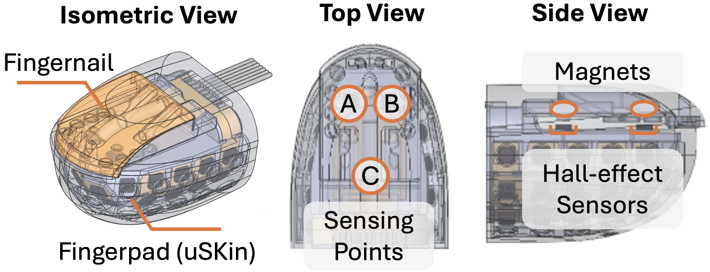

Dexterous manipulation requires complementary contact modes: a compliant surface for stable, distributed contact and a rigid surface for concentrating force at thin edges and within narrow gaps. Humans achieve these modes using the fingerpad and fingernail, yet most tactile robotic hands focus sensing on the fingerpad, leaving nail-mediated interactions needed to lift thin sheets, open lids, and flip cards largely unobserved. We introduce a dual-surface tactile fingertip that combines a densely sensorized compliant uSkin fingerpad with a rigid fingernail instrumented by three spatially distributed 3-axis magnetic taxels. Loading experiments show that the fingernail signals encode force magnitude, force direction, and contact location, with mean force and localization errors of 0.082 N and 0.187 mm. We evaluate the fingertip through behavior cloning on five contact-rich manipulation tasks using a UR5e arm and Allegro Hand. Adding fingernail tactile sensing increases average task success from 48% to 70% and improves robustness across object initializations. On the multi-stage card-flipping task, combining fingernail and fingerpad sensing improves end-to-end success by 15% over the best single-surface policy, showing their complementary roles in dexterous manipulation.
A rigid fingernail on a compliant mount, sensed by three Hall-effect taxels, on top of a uSkin fingerpad.

| Fingernail sampling rate | 275 Hz | Fingernail shell | ≈ 20 × 27 mm |
| Fingernail taxels | 3 × 3-axis magnetic (9 ch) | Nail protrusion beyond pad | 2 mm |
| Fingerpad taxels (uSkin) | 30 × 3-axis magnetic (90 ch) | Fingertip module | ≈ 31.4 × 28.8 × 40.9 mm |
| Channels per fingertip | 99 | Force MAE | 0.082 N |
| Nail transduction | Magnets on nail · Hall sensors on backbone | Localization MAE | 0.187 mm |
Ours is the only design with contact localization on the fingernail.
| Reference | Fingerpad | Fingernail | Behavior Cloning |
||||||||
|---|---|---|---|---|---|---|---|---|---|---|---|
| Sensorized | Mechanism | Structure | Force | Localization | Sensorized | Mechanism | Structure | Force | Localization | ||
| Wuji Hand (v2) | ✗ | – | Passive pad | ✗ | ✗ | ✗ | – | Rigid nail | ✗ | ✗ | – |
| DEXOP | ✓ | Vision-based | Elastomer | △ | △ | ✗ | – | Rigid nail | ✗ | ✗ | ✓ |
| SHARPA Wave | ✓ | Vision-based | Elastomer | ✓ | ✓ | ✗ | – | Rigid nail | ✗ | ✗ | – |
| Murakami et al. | ✓ | Shared 6-axis F/Tglobal wrench | Soft skin | ✓ | ✓ | ✓ | Strain gaugesshared 6-axis F/T | – | ✓ | ✗ | ✗ |
| Kõiva et al. | ✓ | Piezoresistive | 12-taxel array1-axis | ✓ | ✓ | ✓ | Hall-effectbarometric · accelerometer | – | ✓ | ✗ | ✗ |
| DenseTact-Mini | ✓ | Vision-based | Elastomer | △ | △ | ✓ | Optical sensingvia gel | Pivoted rigid nail | △ | ✗ | ✗ |
| Miyazaki et al. | ✓ | Vision-based | Elastomer | ✓ | ✓ | ✓ | Vision-basedmarker tracking | Nail with markers | ✓ | ✗ | ✗ |
| Xu et al. | ✓ | Strain gauges2D force | Soft skininternal beam | ✓ | ✗ | ✓ | Contact microphone | – | ✗ | ✗ | ✗ |
| PLATO | ✓ | Shared distal F/Tglobal wrench | Soft pulp | ✓ | ✗ | ✓ | Shared distal F/T | Rigid nail | ✓ | ✗ | ✗ |
| ARISTO Hand | ✓ | Capacitive | Soft 2×4 array1-axis | ✓ | ✓ | ✓ | 6-axis F/T | Rigid nail | ✓ | ✗ | ✗ |
| Ours | ✓ | Magnetic (uSkin) | 30 distributed taxels3-axis | ✓ | ✓ | ✓ | Magnetic | 3 distributed taxels3-axis | ✓ | ✓ | ✓ |
Behavior-cloned policies with fingernail tactile input on five contact-rich tasks. Real-time.
Uncut consecutive trials, played at 3× speed.
Policies trained without tactile input (vision + proprioception only).